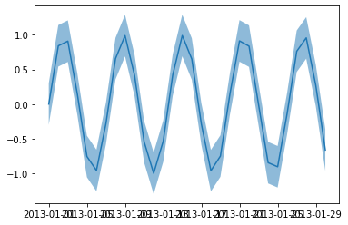
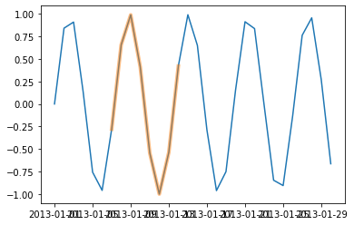
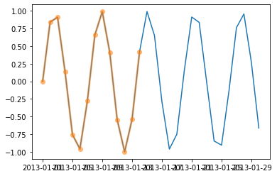
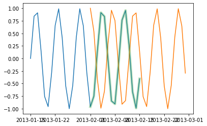
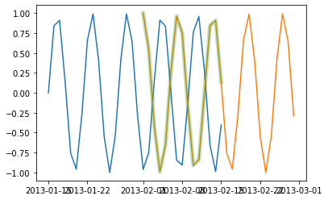
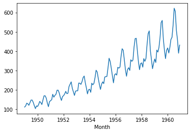
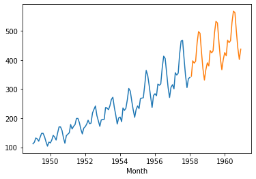
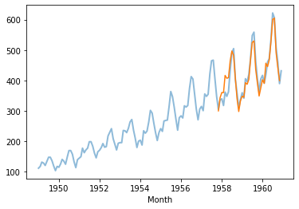

u8timeseries Intro¶
[1]:
%load_ext autoreload
%autoreload 2
%matplotlib inline
[2]:
import pandas as pd
import numpy as np
from u8timeseries import TimeSeries
C:\ProgramData\Miniconda3\envs\u8timeseries\lib\site-packages\statsmodels\compat\pandas.py:49: FutureWarning: The Panel class is removed from pandas. Accessing it from the top-level namespace will also be removed in the next version
data_klasses = (pandas.Series, pandas.DataFrame, pandas.Panel)
TimeSeries Creation¶
From a pd.Series:¶
[3]:
pdseries = pd.Series(np.sin(range(30)), index=pd.date_range('20130101', '20130130'))
series = TimeSeries(pdseries)
From a pd.DataFrame:¶
[4]:
df = pd.DataFrame({'Date': pd.date_range('20130101', '20130130'), 'Value': np.sin(range(30))})
df.head()
[4]:
| Date | Value | |
|---|---|---|
| 0 | 2013-01-01 | 0.000000 |
| 1 | 2013-01-02 | 0.841471 |
| 2 | 2013-01-03 | 0.909297 |
| 3 | 2013-01-04 | 0.141120 |
| 4 | 2013-01-05 | -0.756802 |
[5]:
series = TimeSeries.from_dataframe(df, time_col='Date', value_col='Value')
From times and values directly:¶
[6]:
series = TimeSeries.from_times_and_values(pd.date_range('20130101', '20130130'), np.sin(range(30)))
More on TimeSeries¶
Confidence Intervals¶
[8]:
pdseries_low = pd.Series(np.sin(range(30)) - 0.3, index=pd.date_range('20130101', '20130130'))
pdseries_up = pd.Series(np.sin(range(30)) + 0.3, index=pd.date_range('20130101', '20130130'))
series_conf = TimeSeries(pdseries, pdseries_low, pdseries_up)
series_conf.plot()

Drop, Slice, split¶
[9]:
# Drop end:
series.plot()
beginning = series.drop_after(pd.Timestamp('20130115'))
beginning.plot(marker='o', lw=3, alpha=0.5)

[10]:
# Slice
subseries = series.slice(pd.Timestamp('20130107'), pd.Timestamp('20130114'))
series.plot()
subseries.plot(lw=4, alpha=0.5)

[11]:
# Split
s1, s2 = series.split_after(pd.Timestamp('20130110'))
s1.plot()
s2.plot()

Intersect (in time)¶
[12]:
series1 = TimeSeries(pd.Series(np.sin(range(32)), index=pd.date_range('20130115', '20130215')))
series2 = TimeSeries(pd.Series(np.cos(range(28)), index=pd.date_range('20130201', '20130228')))
series1.plot()
series2.plot()
series1.intersect(series2).plot(lw=5, alpha=0.3)

[13]:
series1.plot()
series2.plot()
series2.intersect(series1).plot(lw=5, alpha=0.3)

Auto-regressive Models¶
[14]:
df = pd.read_csv('AirPassengers.csv')
series = TimeSeries.from_dataframe(df, 'Month', '#Passengers')
series.plot()

[15]:
from u8timeseries import ExponentialSmoothing
train, val = series.split_after(pd.Timestamp('19580101'))
model = ExponentialSmoothing()
model.fit(train)
pred_val = model.predict(len(val))
C:\ProgramData\Miniconda3\envs\u8timeseries\lib\site-packages\statsmodels\tsa\base\tsa_model.py:293: FutureWarning:
RangeIndex._start is deprecated and will be removed in a future version. Use RangeIndex.start instead
C:\ProgramData\Miniconda3\envs\u8timeseries\lib\site-packages\statsmodels\tsa\base\tsa_model.py:293: FutureWarning:
RangeIndex._step is deprecated and will be removed in a future version. Use RangeIndex.step instead
C:\ProgramData\Miniconda3\envs\u8timeseries\lib\site-packages\statsmodels\tsa\base\tsa_model.py:294: FutureWarning:
RangeIndex._start is deprecated and will be removed in a future version. Use RangeIndex.start instead
C:\ProgramData\Miniconda3\envs\u8timeseries\lib\site-packages\statsmodels\tsa\base\tsa_model.py:296: FutureWarning:
RangeIndex._step is deprecated and will be removed in a future version. Use RangeIndex.step instead
[16]:
train.plot()
pred_val.plot()

[17]:
from u8timeseries.backtesting import simulate_forecast_ar
historical_fcast = simulate_forecast_ar(series, model, pd.Timestamp('19570601'), fcast_horizon_n=6, verbose=True)
C:\ProgramData\Miniconda3\envs\u8timeseries\lib\site-packages\statsmodels\tsa\base\tsa_model.py:293: FutureWarning:
RangeIndex._start is deprecated and will be removed in a future version. Use RangeIndex.start instead
C:\ProgramData\Miniconda3\envs\u8timeseries\lib\site-packages\statsmodels\tsa\base\tsa_model.py:293: FutureWarning:
RangeIndex._step is deprecated and will be removed in a future version. Use RangeIndex.step instead
C:\ProgramData\Miniconda3\envs\u8timeseries\lib\site-packages\statsmodels\tsa\base\tsa_model.py:294: FutureWarning:
RangeIndex._start is deprecated and will be removed in a future version. Use RangeIndex.start instead
C:\ProgramData\Miniconda3\envs\u8timeseries\lib\site-packages\statsmodels\tsa\base\tsa_model.py:296: FutureWarning:
RangeIndex._step is deprecated and will be removed in a future version. Use RangeIndex.step instead
[18]:
series.plot(lw=2, alpha=0.5)
historical_fcast.plot()

[19]:
from u8timeseries.metrics import mape, mase
mape(series.intersect(historical_fcast), historical_fcast)
[19]:
4.457910001033541
[ ]: